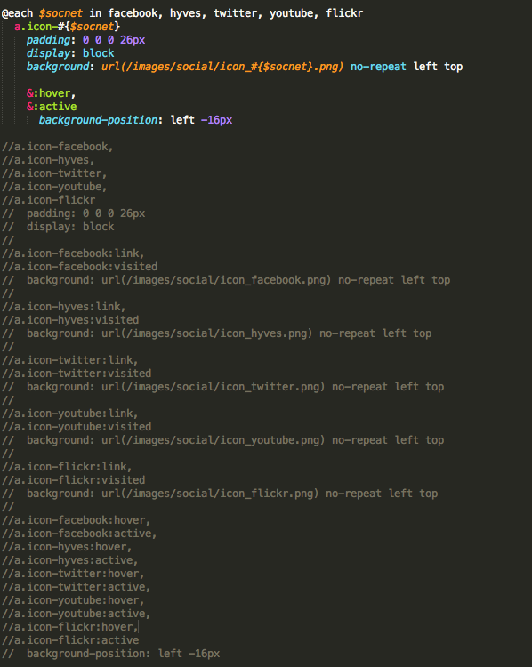

Most frontenders heard bout Sass; some got hooked, many chose Less, and majority stucks with overload informations about how awesome it is, but have no clue in how to start using it on their projects.
The main goal of this article is to guide frontenders who are interested in using Sass NOW. Yes, you will have a project running Sass within the next 10 to 15 minutes.
Excited? on fire?! Awesome! Read on!
Please keep in mind that this article only covers real basic of Sass & Compass for Sass newbies. I am planning on writing more about how to use them in the future, but not in this version.
~ Why Sass? ~
There are a lot of discussions going on about Sass vs. Less. Most developers I met are on Less' side and
I would like to persuade them to take a peek a bit on Sass; two of the main reasons are because of Compass & also... Sass is more logical.
Wait... did I hear "Why?!"
So here is the truth; indeed Less has what Sass has(mixin, extend, you-name-it), but the way Less work is different than Sass.
I am not planning on explaining the difference here, since there are many other experienced developer out there blogging about this topic.
One of the best explanations I really like is from Chris Coyier. Take a good read on it, seriously.
~ Step by Step ~
So you are convinced and want to try Sass now. I assure you this will be super easy and quick, let's do it now.
Step 1
First things first, let's decide on the compiler. There are several options, such as:
CodeKit - an amazing tool for developers. It's not only compiling Sass & Compass but also Haml, Less, Stylus, Jade, & CoffeeScript. They also have a livereload feature, super handy. Def recommended!($25)
And many other sizzle out there (that I haven't tried)
* I personally use Compass because it is easier for me and I don't have to install any app on my mac; however I would recommend Scout for people who prefer easy UI(Sass & Compass) - and CodeKit for people who are not only using Sass & Compass but also Haml, CoffeeScript, etc.*
Using Scout App is super easy, all you have to do is go to their website and download the app. Everything is straight forward: add desired projects on the left(1), configure it on the right(2), and click "Log" on top right to see console messages(3).
ScoutApp image: see image 1, 2, & 3
Using Compass is slightly different, but equally easy. All you have to do is adding config.rb on your project folder. See below:
Project structure for Sassify!
Then paste the code below on config.rb(please adjust accordingly to your project structure):
# Require any additional compass plugins here.# Set this to the root of your project when deployed:
http_path = "/" # Path for images
http_images_path = "/images/"
http_generated_images_path = "/images/"
# To enable relative paths to assets via compass helper functions. Uncomment:# relative_assets = true# To disable debugging comments that display the original location of your selectors. Uncomment:# line_comments = false# If you prefer the indented syntax, you might want to regenerate this# project again passing --syntax sass, or you can uncomment this:# preferred_syntax = :sass# and then run:# sass-convert -R --from scss --to sass sass scss && rm -rf sass && mv scss sass
Step 2
After adding config.rb on your project, go to Terminal => project folder => type "compass watch". BAM! Compass is compiling your Sass files.
* Make sure you already created a sass file inside your sass folder, otherwise you will see error message on terminal when you type "compass watch" *
// Mixins are defined with the @mixin(also "=") directive. It’s followed by the name of the mixin and optionally the arguments, and a block containing the contents of the mixin. For better explanation, please go here.
=retina-image($image, $ext, $resolution, $properties: false) background: url(../images/#{$image}.#{$ext}) $properties@media only screen and (-webkit-device-pixel-ratio: 2)background: url(../images/#{$image}_2x.#{$ext}) $propertiesbackground-size: $resolution
// Fleximage is for fluid image
=fleximage max-width: 100%width: 100%height: auto
// Define variables
$fontFamily: 'Enriqueta', Georgia, serif
$titleFont: 'Coustard', cursive, Georgia, serif
$fontColor: #111
$altColor: #0070b8
$alertColor: #c30c30
// Text selection styling
body font-family: $fontFamily/* The font-size is now 0.625 * 16px = 10px. */font-size: 0.625em/* The leading is now 25 pixels. */line-height: 2.5emcolor: $fontColor
Step 3
Congratulation! now you are officially using Sass!
* imagine me patting each one of you on the back *
* Control Directives are really amazing! See figure below as an example. *

Refactoring old project to Sass
OK, now the exciting news - one of the major reasons why you should pick Sass: Compass!
~ Compass ~
Compass provides cross browser CSS3 mixins, basic mixins for common typography patterns, and basic mixins for common styling patterns. These make things super easy for frontender, here is a simple example below:
.radius-box display: inline-blockpadding: 10pxcolor: whitebackground: black
// See explanation here+border-radius(5px)
// See explanation here+background-image(linear-gradient(white, #cccccc 30%, #bbbbbb 70%, #aaaaaa))
.intro-text
font-family: $fontFamilyfont-size: 2em
// See explanation here+text-shadow(#rgba(0, 0, 0, 0.5) 0 1px 1px)
Spiffy ey? bet you're amazed and excited to start playing around with Sass and Compass now! Enjoy it! and if you have any comments regarding this simple article, please do not hesitate to mail me here.